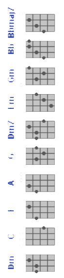

tabs.ultimate-guitar.com/tab/misc-soundtrack/jesus-christ-superstar-ukulele-1256577
ukulele-tabs.com/uke-songs/andrew-lloyd-webber/heaven-on-their-minds-uke-tab-3991.html

a-----------------------------------------------|
E-----------------------------------------------|
C-2-2---------2-2--------2--2--------2-2--------|
G-----7-8-5-7-----7-8-5-7----7-8-5-7----7-8-5-7-|
[4/4, Chords played over the Eb Cm Dm Eb Cm progression/bass riff]
Dm F G
My mind is clearer now at last all too well
F G Dm
I can see where we all soon will be
Dm F G
If you strip away the myth from the man
F G Dm
You will see where we all soon will be
Dm Em
Jesus! You've started to believe the things they say of you
F G Dm
You really do believe this talk of God is true
Dm Em
And all the good you've done will soon get swept away
F G Dm
You've begun to matter more than the things you say
Dm F
Listen Jesus I don't like what I see
Dm G
All I ask is that you listen to me
Bb C F A
And remember I've been your right-hand man all along
Dm Bb
You have set them all on fire
F
They think they've found the new Messiah
D/A A+ A Bb Dm7
And they'll hurt you when they find they're wrong
Dm F
I remember when this whole thing began
Dm G
No talk of God then we called you a man
Bb C F A
And believe me my admiration for you hasn't died
Dm Bb
But ev'ry word you say today
F
Gets twisted 'round some other way
D/A A+ A Bb Dm7
And they'll hurt you if they think you've lied
[in 7/8]
Bb F Gm Dm
Nazareth your famous son should have stayed a great unknown
Gm Dm/A A Dm
Like his father carving wood he'd have made good
Bb F Gm Dm
Tables chairs and oaken chests would have suited Jesus best
Gm Dm/A A Dm
He'd have caused nobody harm -- no one alarm
[back to 4/4]
Dm F
Listen Jesus do you care for your race?
Dm G
Don't you see we must keep in our place?
Bb C F A
We are occupied -- have you forgotten how put down we are?
Dm Bb
I am frightened by the crowd
F
For we are getting much too loud
Dm/A A+ A Bb Dm7
And they'll crush us if we go too far
[back to 7/8, instrumental break repeating previous 7/8 bridge]
[back to 4/4]
Dm F
Listen Jesus to the warning I give
Dm G
Please remember that I want us to live
Bb C F A
But it's sad to see our chances weakening with every hour
Dm Bb
All your followers are blind
F
Too much heaven on their minds
Dm/A A+ A Bb
It was beautiful but now it's sour
Dm Bbmaj7
Yes it's all gone sour...